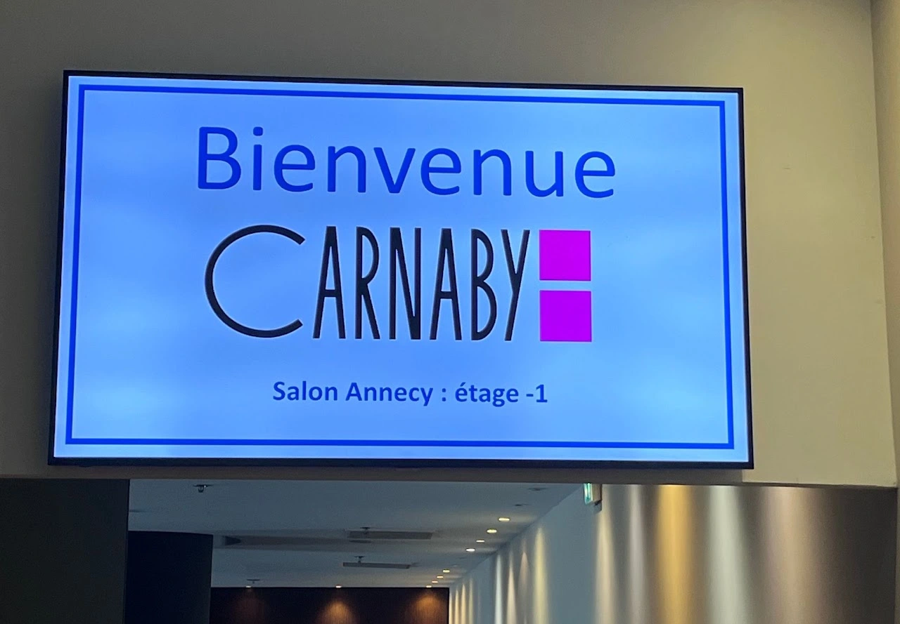
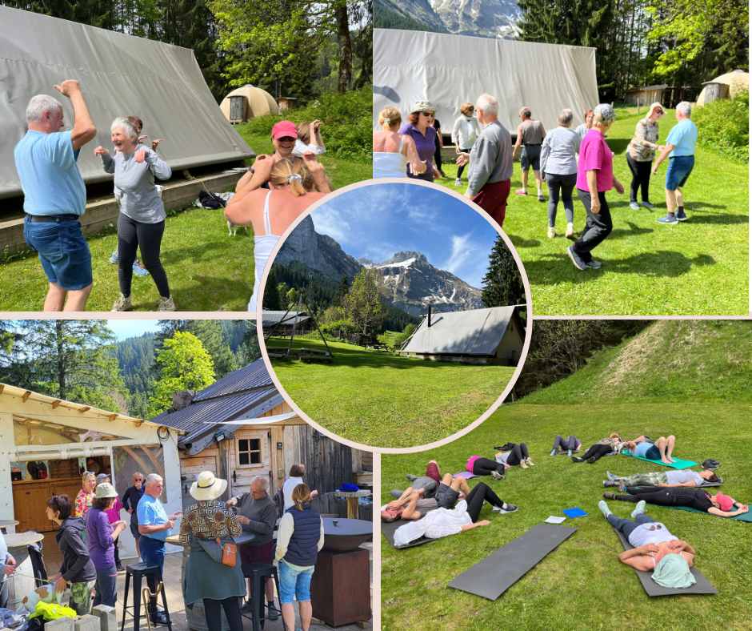
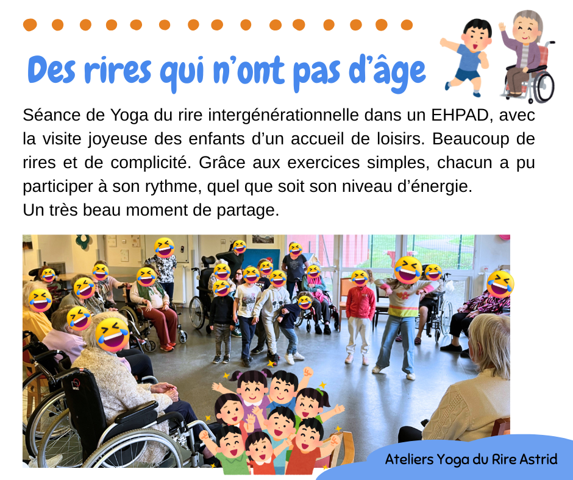
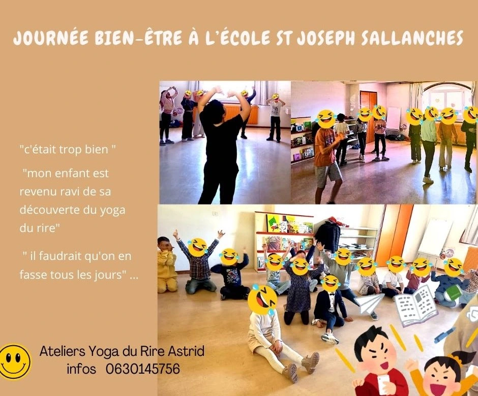
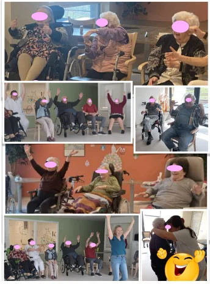

Agenda des séances
Restez informé des prochaines dates sur les réseaux sociaux
Vous voulez organiser un évenement,rendez-vous sur la page de Contact.
Séances Régulières à La Roche sur Foron
Tous les lundis matin à 10h30 La Base du Pays Rochois, 156 Av. Charles de Gaulle 74800 La Roche sur Foron.
et 2 mercredis par mois à 19h, programme : https://labase-paysrochois.org/agenda/
Participation libre, possibilité de venir faire une séance pour essayer à tout moment.
Deux mardis par mois, j'ai le plaisir d'animer la séance du rire en ligne
C'était super. On a bien rigolé!
Les rencontres des pensionnés du CMCAS aux Marches, puis à Morillon, ont permis de rassembler une large assemblée de rieurs dans une ambiance chaleureuse et conviviale. Ces séances collectives ont été de beaux moments de partage, d’énergie et de bonne humeur.

Les équipes des magasins Carnaby ont fait le plein de rire pour la rentrée!

Des montagnes de rires dans un décor de rêve à l'Altipik au Mont Saxonnex

séance inter-générationnelle à la maison de retraite de Marignier

Yoga du rire à l'école!
Les élèves infirmiers de 3ème année de l'IFSI d'Annemasse ont pu découvrir le Yoga du Rire lors des journées de prévention du stress et du burn-out.

A l'Hôpital Andrevetan, des séances qui remettent en mouvement et qui redonnent le sourire aux résidents! En Ehpad, le Yoga du Rire a toute sa place.